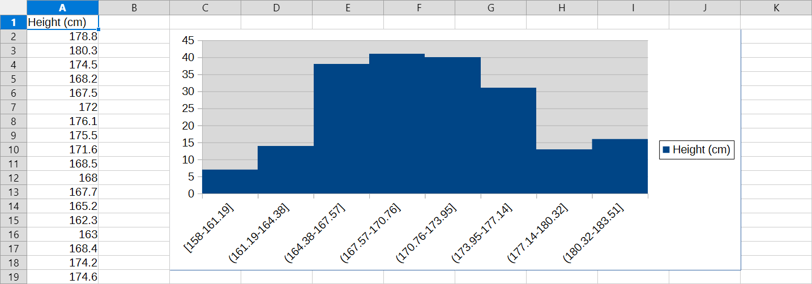

Histograms and chart sheets
Histograms
addChartEx makes LibreOffice's histogram, which counts the values that fall in each bin:
using OpenDocumentSpreadsheets
using OpenDocumentSpreadsheets.Charts
xf = newods("Heights")
ws = xf["Heights"]
ws["A1"] = "Height (cm)"
for i in 1:200
ws[i+1, 1] = round(170 + 9 * sin(i) * cos(i / 7) + 4 * sin(i / 3); digits = 1)
end
h = addChartEx(ws, :histogram, "A2:A201"; anchor = "C2:J18", name_ref = "A1")
setSeriesBinning(h, 1; binCount = 8)<!– shot: histogram cells=11x19 –>

Bins are set by their width (binSize) or count (binCount). LibreOffice draws the bins stored with the chart, but labels the bars with the ranges of its own automatic bins.
Of the other "chartex" kinds, LibreOffice has no waterfall, funnel, treemap, sunburst, Pareto or box and whisker chart, so they are errors.
Chart sheets
A chart sheet is a sheet that holds only a chart, anchored to the page:
c = addChart(xf, :column; sheetname = "Chart", title = "Heights")
addSeries(c, "Heights.A2:A21"; name_ref = "Heights.A1")It is an ordinary sheet in the file, so its references name their sheet: "Heights.A2:A21". addChartEx(xf, …; sheetname) makes a histogram on a sheet of its own.